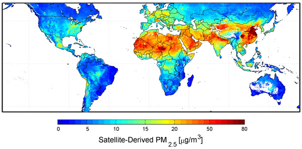
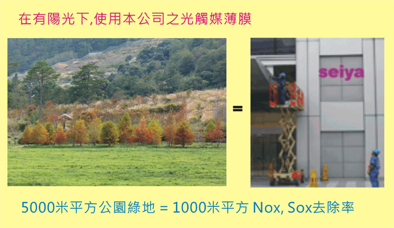

光觸媒清淨機(設計、合作)步驟：
1. 依客戶所需(討論用途、目標價)；使用環境條件，其抗菌或抗污、除臭....等不同功能是否可行。
2. 依被加工材料或元件，選用最佳之光觸媒原料及最佳節省原料之加工法。
3. 產品或模組使用光學設計，使其充份發揮其效果。
4. 其它(專利、電器安規、防火安規、效能驗證...等)。
世屋光觸媒加工自2002年從日本引進台灣，已具有20多年之加工技術與經驗，並榮獲政府研發補助。

圖片來自US NASA
在我們居住環境中，除了自然界的粉塵外，或是沙漠化之沙塵暴，更有許多因汽機車產生之廢氣，以及工廠排出之廢氣，其中以氮化物及硫化物是作污因為氮氧化物或硫化物在空氣中可生成毒性更大的硝酸或硝形成酸雨，嚴重危害人體健康，然而最好的淡化或分解其有害氣體的方式是森林的覆蓋，除此外就以經濟成本而言來說，就屬光觸媒是最有效的辦法了，這些廢氣物是經年累月的排放，而大自然給我們最好的禮物是陽光，只要有陽光，光觸媒就可以進行分解，如果整個都市都是使用光觸媒建材，那這個都市就如同是一座森林，有乾淨的空氣，和抗污染不易髒的建物。
戴奧辛dioxine)可說是工業文明下的產物，它號稱世紀之毒，在焚化爐廠區及週圍其濃度都比正常背景為高，然而這些有害的物質平常低濃度是聞不到的，但長期下來，除了周遭土地受污染外，也將對身體構成傷害，為了能夠降低其濃度，可在廠區及週圍建物塗裝光觸媒薄膜，它可以有效降低戴奧辛含量，這是非常簡單的方法，此種用法用於煉油場最合適，煉油廠造成之空氣污染，是無法避免，要降低當地居民之反感，將其附近之民宅及廠房塗佈光觸媒，除可保持外觀新穎，並可降低其空氣污染程度。

世界衛生組織於2013年將「戶外空氣污染」，列為致癌因素，指出空污除了會導致呼吸和心臟疾病外，還會提高罹患肺癌和膀胱癌的機率，並表示空污的影響，比二手菸還嚴重，其中以中國大陸及印度最為嚴重。
以中國大陸北方而言，其PM2.5污染，在<天氣沒風時>供電供暖燃煤所產生之硫、氮化..等物(主因)，另外加上汽機車排氣、工業排氣、都市內工程...都加重其污染程度，光觸媒可改善化學氣體，而粉塵則必須由大量植栽，才是解決之道。
一般成一次的呼吸量約500ml(毫升)，深呼吸時為2000-2500ml(毫升)，因此以一天來說，大約會有11-20萬公升的呼吸量，因此空氣污染是對健康危害可想而知之嚴重。
空氣中浮游粉塵濃度對人體會有影響，中華民國環保署定義小於10um粒徑(PM10)之粒子為懸浮粒子(對人體有害對人體有害之粒徑約0.3~10um)而小於2.5um粒徑( PM2.5 )之粒子，其傷害最大，它可穿透肺泡直達血液其中許多都為工業產生之化學物污染顆粒，它的毒性更強，依美國NASA官網指出，PM2.5空氣污染引發美國每年有六萬人因其影響造成死亡，依照NASA在PM2.5全球污染圖示，中國大陸比美國嚴重數倍，以人口比例推算，因空污問題直接及漸接導致，其受害死亡人數可能有百萬人/年。

以日本的實驗,塗裝1000平方的光觸媒,相當等於5000平方的綠色植物,我們都知到室內種植景觀盆栽可以改善部份的空氣品質,如果在室內也使用光觸媒素材,使用適當之採光設計,它還可以分解因裝璜產生的甲醛及甲苯有害氣體.
應用：
用於船底塗料的有機錫化合物、PCB多氯聯苯）使用於建材的溶繫劑和接著劑，含在排氣中Benz pyren（致癌物質），這些各種各樣的化學物質成為分泌攪亂物質像Hormon作用於人体而引起過敏症或先天皮膚炎，化學物質過敏症, 目前處理環境污染物質的方法處是收集後再濃縮經燃燒使其熱分解，若對環境Hrrmon採用同樣的方法處理，則因有擴大範圍的污染地帶需處理龐大的水、大氣、土壤,因此需使用大量的石化燃料等能源，處理後可能產生大量的二氧化碳（CO2）及dioxine等毒化二次公害物質，因此適當將光觸媒技術設計，將可節省處理之能源。
我們都知在工業的發展中，處理廢氣或是污染過的土地需要大量的能源，此大量的能源更會造成溫室效應，除此外石油將會越來越短缺也昂貴，因此除了在提升太陽能、風力的使用效能上，我們使用自然的陽光來分解有害物質，也不需要購置維修其它的機器裝備，可以說是非常經濟且環保的做法。
1. 依客戶所需(討論用途、目標價)；使用環境條件，其抗菌或抗污、除臭....等不同功能是否可行。
2. 依被加工材料或元件，選用最佳之光觸媒原料及最佳節省原料之加工法。
3. 產品或模組使用光學設計，使其充份發揮其效果。
4. 其它(專利、電器安規、防火安規、效能驗證...等)。
世屋光觸媒加工自2002年從日本引進台灣，已具有20多年之加工技術與經驗，並榮獲政府研發補助。